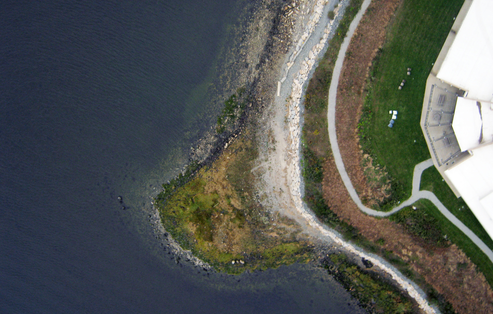

jerome arul
creative mapping
In Creative Mapping, a class at RISD Digital + Media taught by Catherine D’Ignazio, we balloon mapped! We launched a balloon over Save the Bay with the help of Grassroots Mapping (now Public Lab).


The maps were knitted with MapKnitter and uploaded by labber gonzoearth.
Here’s a diy guide to balloon mapping.